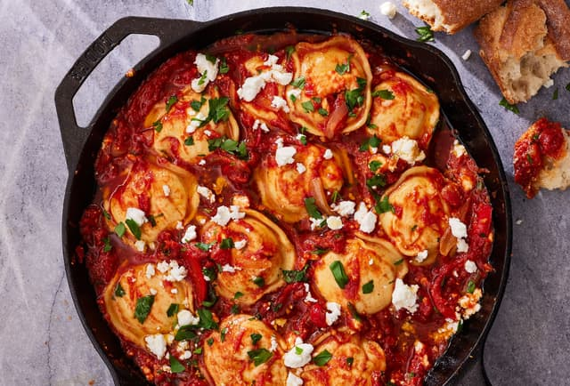

One-Pan Ravioli Shakshuka

Traditional shakshuka has runny eggs that have simmered in the warmly
spiced tomato sauce, but in this version we traded out the eggs for ravioli
and it's every bit as satisfying. It's the perfect version for dinner and
honestly, the pasta is a lot easier than stressing over getting that egg
perfectly runny. Serve it with some crusty bread for swiping in the
sauce and you have the coziest weeknight dinner in about 30 minutes.
Ingredients
Before you prepare this perfect lucnh recipe here are
some of the ingreients you need:
- 1 tbsp. extra-virgin olive oil
- 1 red bell pepper, sliced
- 1 medium yellow onion, sliced
- 3 cloves garlic, minced
- 2 tbsp. tomato paste
- 1 tsp. sweet paprika
- 1/4 tsp. crushed red pepper flakes
- 1 (28-oz.) can crushed tomatoes
- 1/2 c. low-sodium vegetable broth
- Kosher salt
- Freshly ground black pepper
- 1 (12-oz.) bag spinach and cheese ravioli
- 1/3 c. crumbled feta
- Freshly chopped parsley, for serving
- Crusty bread, for serving
How to make this simple meal
Follow the steps below to make this meal:
- In a large, high-sided skillet over medium heat, heat oil.
Add bell peppers and onions and cook until soft, 10 minutes.
Add garlic and cook until fragrant, 1 minute more. Add tomato paste,
paprika, and red pepper flakes and stir to coat.
- Add tomatoes and broth and bring to a simmer. Season with salt and pepper.
Once simmering, add ravioli and cook, covered, until al dente,
4 to 6 minutes.
- Top with feta and parsley and serve with bread for dipping.